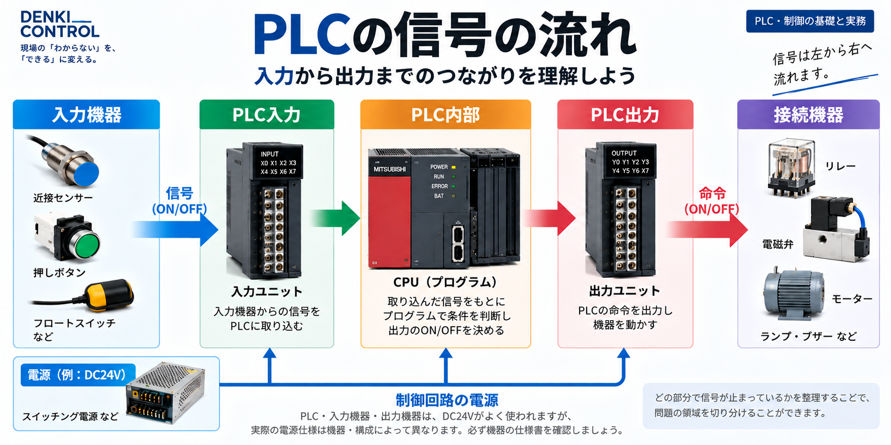
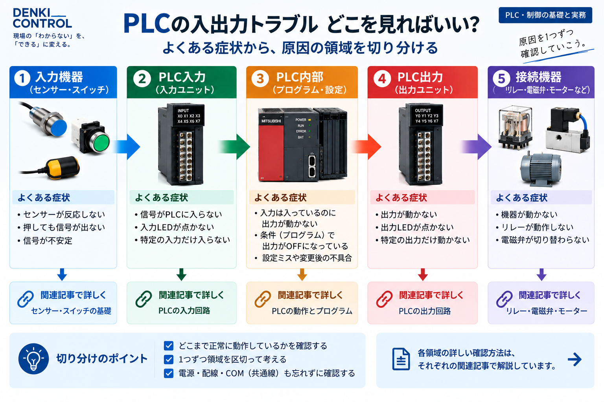
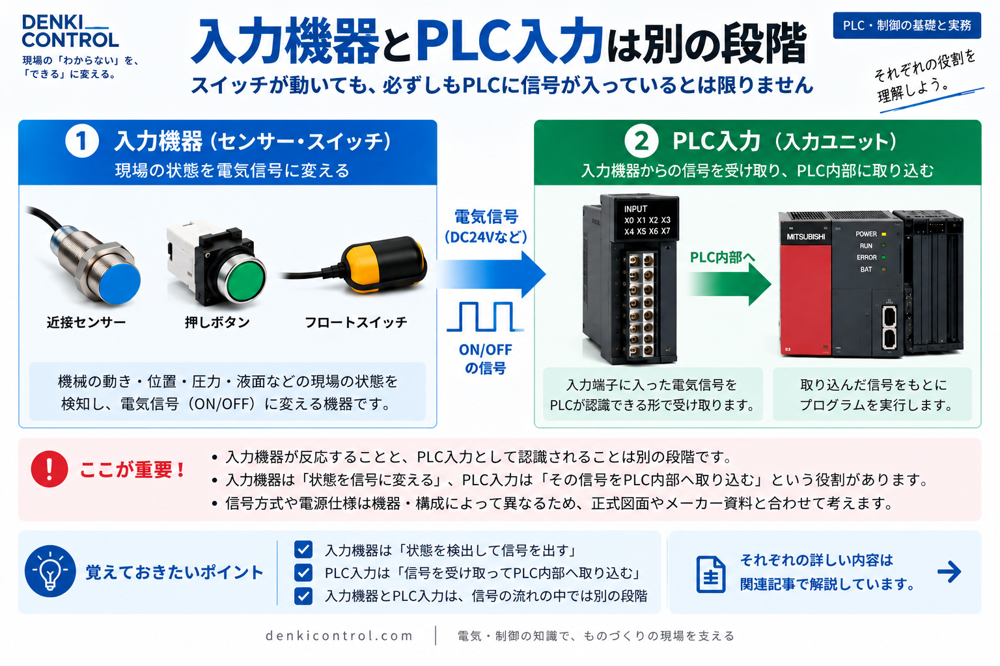
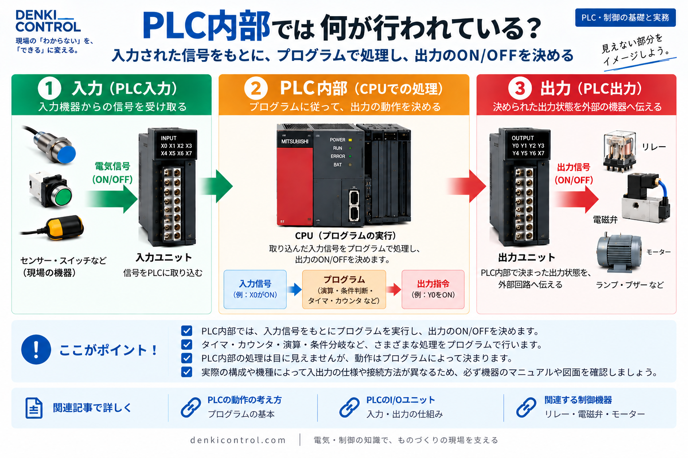

まず「信号がどこまで進んでいるか」で考える
PLCを使った設備では、ひとつの動作にも複数の領域が関わります。トラブルを整理するときは、最初から「PLCが悪い」「センサーが悪い」と決めるより、信号の流れをいくつかの領域に分けて考えると全体像をつかみやすくなります。
基本の地図
入力機器 → PLC入力 → PLC内部の条件 → PLC出力 → 接続機器
さらに、この流れを支える土台としてDC24Vなどの制御電源やCOMの考え方があります。この記事では各領域の詳細作業ではなく、「次にどの記事を読むべきか」を判断するための地図として整理します。

症状を「どの領域の話か」に分ける
同じ「動かない」という症状でも、入口となる入力信号、PLC内部の制御条件、出力信号、その先の接続機器では意味が違います。まず症状を領域に分けると、読むべき図面や資料、関連記事を絞りやすくなります。
| 見えている状態 | 次に整理する領域 | 関連するテーマ |
|---|---|---|
| 入力機器側の状態とPLC入力の認識が一致しない | 入力側 | センサー、NPN/PNP、入力ユニット、COM |
| PLC入力は認識されているが期待する動作につながらない | PLC内部 | X/Y/M/D、スキャン、プログラム条件、モニタ |
| PLC内部では出力条件が成立しているように見える | 出力側 | 出力ユニット、リレー、接続機器 |
| 複数の信号がまとめて成立しない | 共通の土台 | DC24V、COM、電源系統、正式図面 |

入力側：入力機器とPLC入力の間を整理する
入力側には、押しボタンや各種センサーなどの入力機器、入力ユニット、DC24V、COM、NPN/PNPなど複数の要素があります。ここでは個々の配線方法ではなく、「入力機器の状態」と「PLCが入力として認識している状態」は別の段階だと理解することが重要です。
入力機器
センサーなどが何を検出し、どのような信号方式なのかを仕様書・図面で整理します。
PLC入力
入力ユニットがその信号をどの入力として扱う設計なのかを確認する領域です。

PLC内部：入力が入った後の条件を分けて考える
PLC入力が認識されても、それだけで出力が成立するとは限りません。PLC内部では複数の条件、内部デバイス、タイマやカウンタなどが組み合わさる場合があります。
ここで役立つのが、X・Y・M・Dなどのデバイスの役割と、PLCがプログラムを繰り返し処理するスキャンの基本です。個別のプログラムを追う前に、入力と内部条件と出力を別の段階として理解しておくと整理しやすくなります。
「入力ON＝出力ON」ではない
入力は制御条件のひとつです。実際の動作条件は設備のプログラムや仕様によって異なるため、正式なプログラム資料・図面・メーカー資料を基準に読みます。

出力側：PLC出力と接続機器を同じものにしない
PLCの出力状態と、その先にある機器の動作も別の段階です。出力ユニットの先には、リレー、電磁弁など、設備によってさまざまな機器が接続されます。
そのため、PLC出力が成立しているように見えることだけで、接続機器まで正常と判断することはできません。 出力側の記事では、出力ユニットや接続機器との関係をさらに詳しく整理します。
DC24VとCOMは信号の流れを支える土台
PLC入出力を考えるときは、信号だけでなく制御電源とCOMの関係も重要です。特にDC24V系では、+24V、0V、COM、NPN/PNPなどの言葉が同時に出てくるため、混同しやすいところです。
ただし、COMの扱いや回路構成は機種・ユニット・設計によって異なります。名称だけで決めつけず、正式図面と対象機器のメーカー資料を基準に読むことが基本です。
PLCトラブルで混同しやすいポイント
- 入力機器が反応している＝PLC入力が認識しているとは限りません。別の段階として考えます。
- PLC入力がON＝出力条件が成立するとは限りません。PLC内部には別の制御条件があります。
- PLC出力がON＝接続機器が動作しているとは限りません。出力と機器は別の領域です。
- COMはすべて同じ意味・接続とは限りません。対象ユニットの仕様と正式図面を基準にします。
- 「PLCが悪い」と最初から決めつけないこと。入力・内部・出力・電源・接続機器に分けて整理します。
この記事は実機作業の手順書ではありません
ここで示しているのは、PLC入出力のトラブルを理解するための概念的な切り分けです。実設備の点検・変更・測定・復旧などは、対象設備の正式図面、メーカー資料、適用される安全ルールを優先し、必要な教育・資格・権限を持つ担当者の手順に従ってください。安全回路やインターロックを無効化して確認することを前提としていません。
まとめ：PLCトラブルは「信号の地図」に分けて考える
PLC入出力のトラブルは、ひとつの原因名を探すところから始めるより、入力機器 → PLC入力 → PLC内部 → PLC出力 → 接続機器という流れに分けると整理しやすくなります。
さらにDC24VやCOMを共通の土台として考え、どの領域を詳しく見るべきかが分かったら個別記事へ進みます。このハブを入口に、基礎記事とトラブル記事を行き来しながら理解を深めてください。